Conditional Image Generation with Structural Control · Fill50K Dataset
The goal of this problem is to implement ControlNet, a neural network architecture that adds spatial conditioning control to large pre-trained text-to-image diffusion models (Stable Diffusion v1.5). Given a control image (a black-and-white circle mask) and a text prompt, the model must generate an image that matches both the structural layout of the control image and the color/content described by the prompt.
The evaluation uses the Fill50K dataset, which contains circle shape images with various color prompts. Generated images are evaluated using:
The Fill50K dataset consists of paired source (control) and target images along with text prompts. Each source image contains a black circle on white background, and each target image is the colored version according to the prompt.
| Split | Images | Format |
|---|---|---|
| Training | 49,800 | source/, target/, prompt.json |
| Testing | 20 | source/, target/, prompt.json |
Each prompt.json line follows the format:
{"source": "0.png", "target": "0.png", "prompt": "orange red circle with pale golden rod background"}
Source images are normalized to [0, 1] (control hints), target images to [-1, 1] (training targets).
ControlNet (Zhang et al., 2023) augments a frozen pre-trained diffusion UNet with a trainable copy of its encoder. The key idea is:
| Component | Parameters | Trainable |
|---|---|---|
| SD UNet (DiffusionWrapper) | 859.5 M | No (frozen) |
| VAE (AutoencoderKL) | 83.7 M | No (frozen) |
| CLIP Text Encoder | 123 M | No (frozen) |
| ControlNet | 361.3 M | Yes |
| Total | 1.43 B | 361.3 M |
We used the official ControlNet implementation (lllyasviel/ControlNet) with the cldm_v15.yaml config on top of Stable Diffusion v1.5. The base SD weights were used to initialize the ControlNet encoder via tool_add_control.py.
| Hyperparameter | Value |
|---|---|
| Base model | Stable Diffusion v1.5 (v1-5-pruned.ckpt) |
| Optimizer | AdamW |
| Learning rate | 1e-5 |
| Batch size | 8 (per GPU) × 8 GPUs = 64 effective |
| Epochs | 8 |
| Steps per epoch | 780 (DDP) |
| Precision | fp32 |
| Hardware | 8× NVIDIA H200 (143 GB each) |
| Training time | ~85 minutes total |
| SD weights frozen | Yes (sd_locked=True) |
| only_mid_control | False |
| Inference steps (DDIM) | 50 |
| Guidance scale | 9.0 |
| Control strength | 1.0 |
| Seed | 42 |
The training loss (simple diffusion loss) converged from ~0.007 at the start of epoch 0 to ~0.005 by epoch 7, indicating stable training with no divergence.
Epoch 0, step 0: loss=0.00698, loss_simple=0.00486 Epoch 7, step 779: loss=0.00506, loss_simple=0.00238
The implementation followed the official ControlNet repository. The key components are:
cldm/cldm.py): A trainable copy of the SD UNet encoder with an additional input_hint_block that downsamples the 512×512 control image to latent space size via 8 strided convolutions. Each encoder block output passes through a zero convolution before being added to the frozen UNet decoder's skip connections.tool_add_control.py, ensuring the model starts in a stable state.np.Inf removed in NumPy 2.0, torch.load defaulting to weights_only=True, and gradient checkpointing incompatibilities. Each required targeted fixes.
taming-transformers package renamed VectorQuantizer2 to VectorQuantizer. Fixed by patching the import in ldm/models/autoencoder.py.
accelerator='ddp' and gpus=8, which reduced steps per epoch from 12,475 (single GPU) to 780, dramatically speeding up training.
Below are sample triplets: control image → generated image → ground truth.
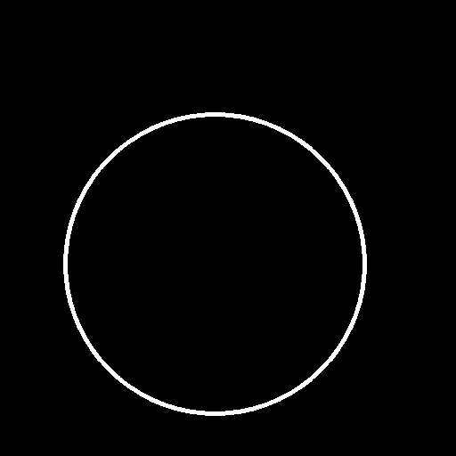
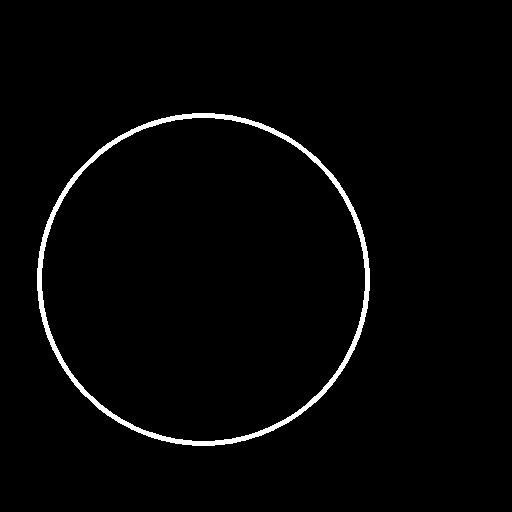
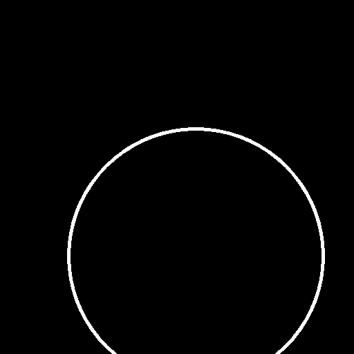
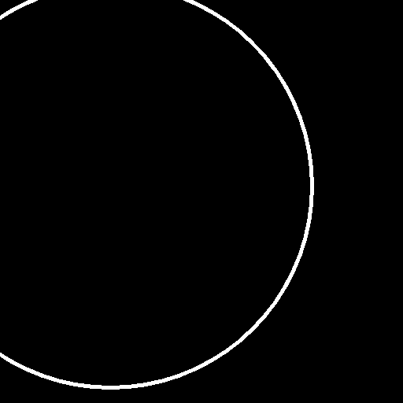
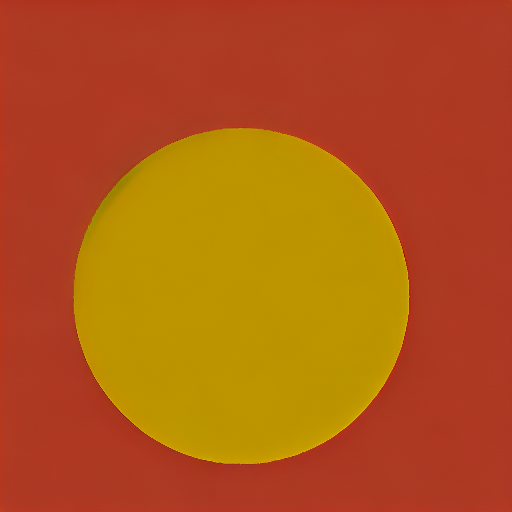
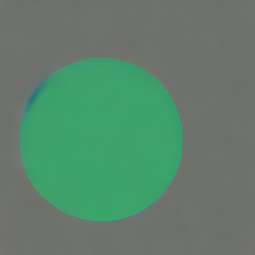
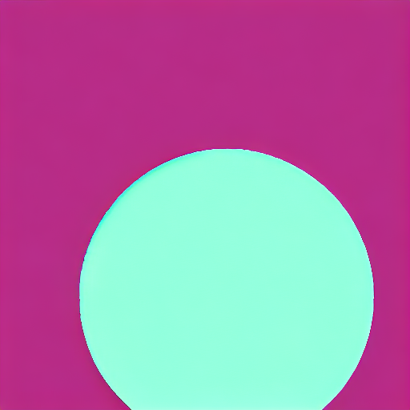
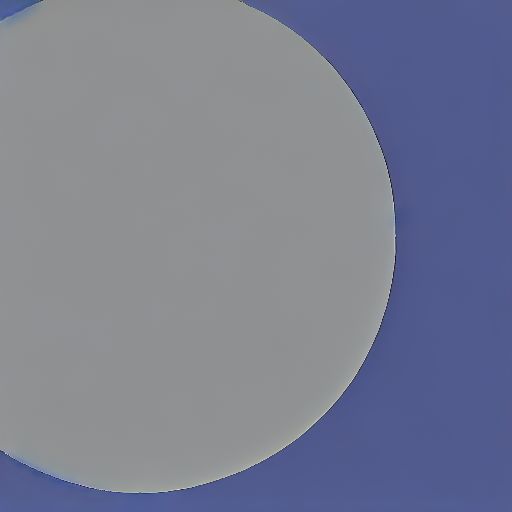
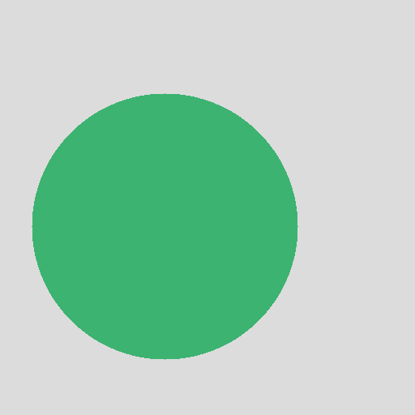
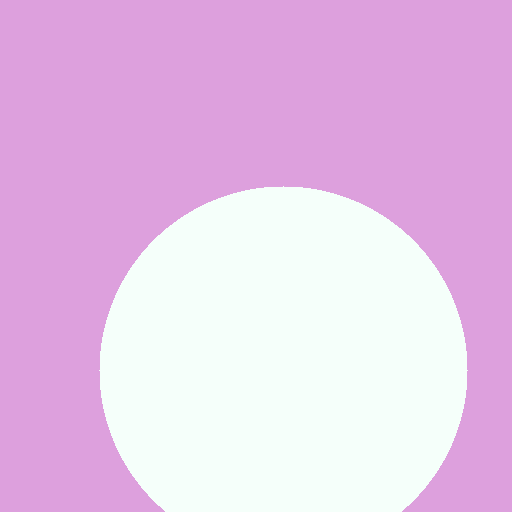
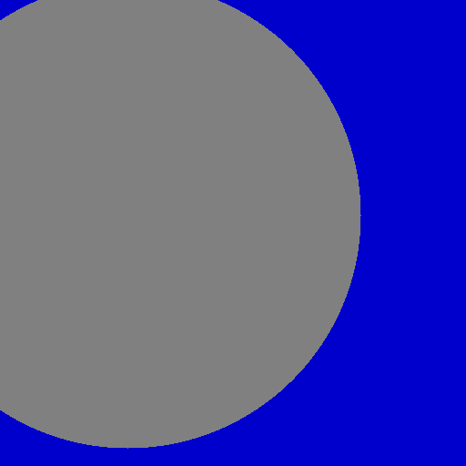
We generated images using ControlNet with control images containing two circles to analyze whether ControlNet can handle multi-object control conditions that differ from the single-circle training distribution.
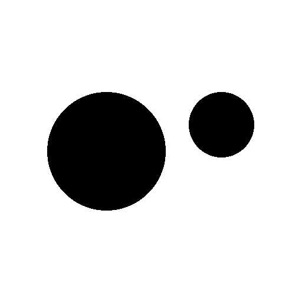
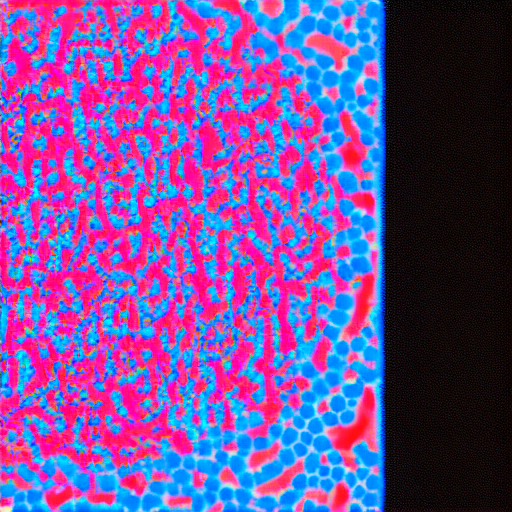
Prompt: "red circle and blue circle with white background"
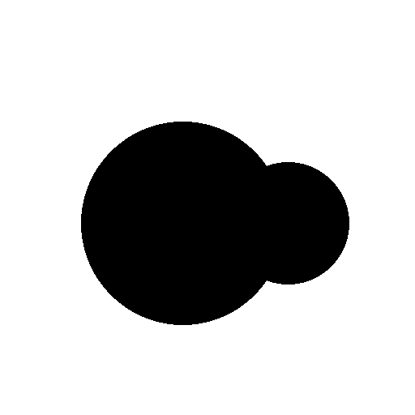
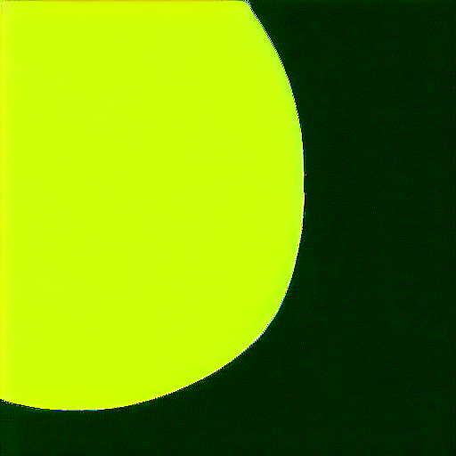
Prompt: "yellow circle and green circle with white background"
Possible reasons for failure/weak control: